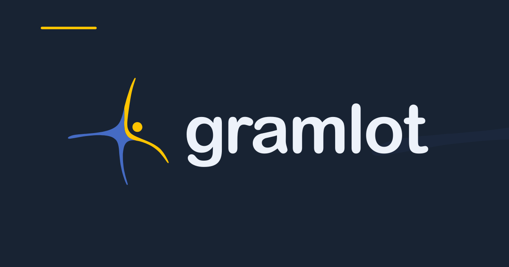
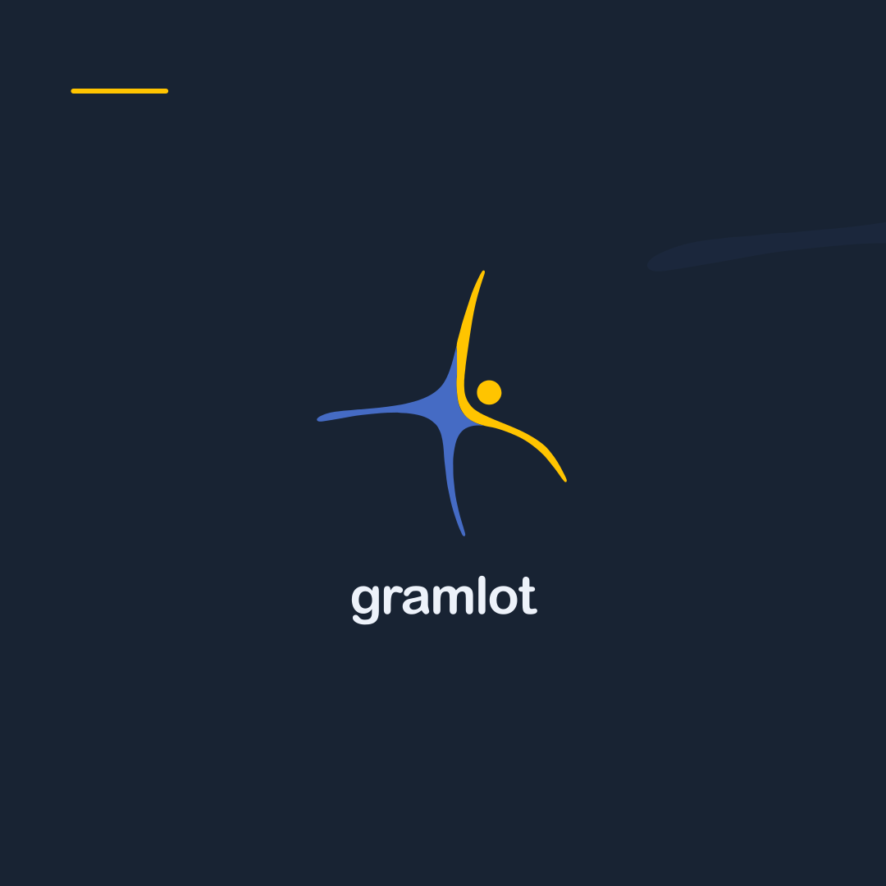
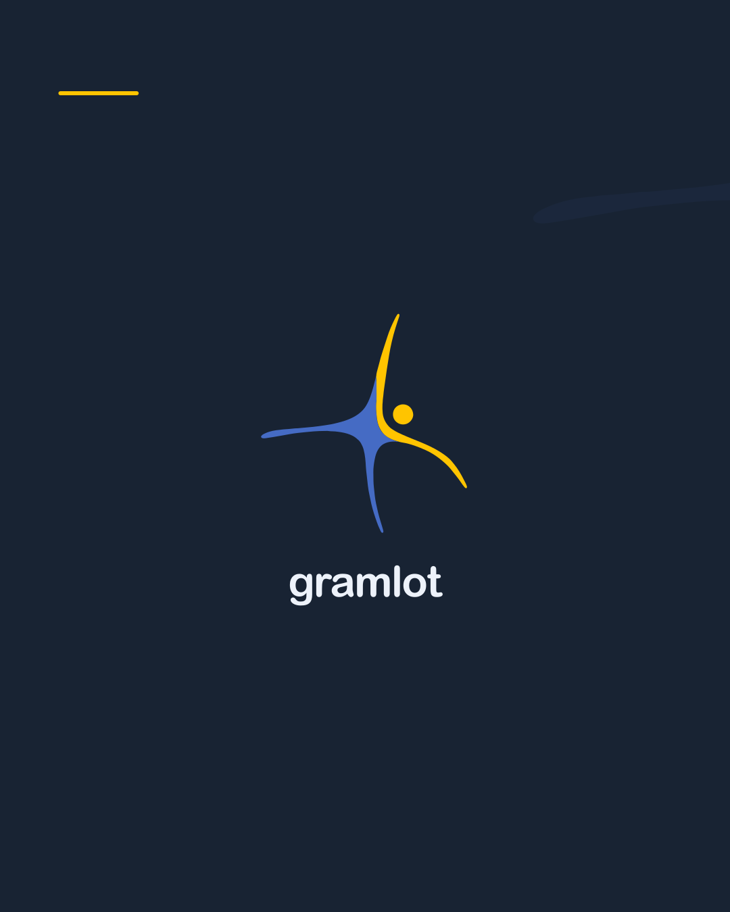
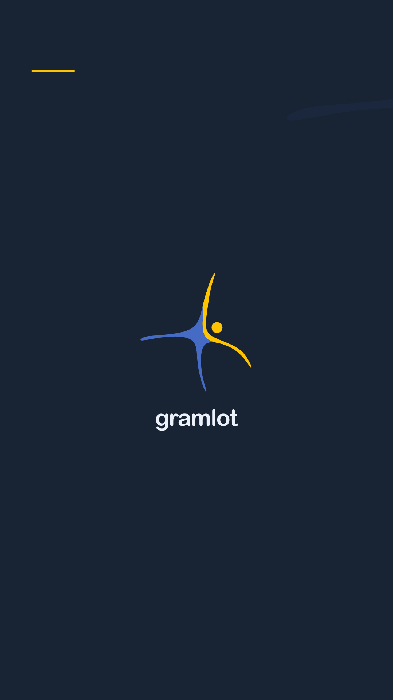

Mark
6 variants · transparent SVG & PNG


Logo
6 variants · transparent SVG & PNG


Horizontal
6 variants · transparent SVG & PNG


Wordmark
6 variants · transparent SVG & PNG


Color language
Approved brand & supporting UI tokens#456BC4#FFC400#243449#F7F8F5#FFFFFF#EDF1F7#566579#D5DCE5#7A8798#182333#EDF2FA#456BC4#3557AB#EAF0FC#23745B#EAF5EF#785000#FFF4CF#B13D48#FCEEF0
Small, but recognizable
Actual pixel sizes


Inspect 16px and 24px exports on the target browser: the approved mark has thin tips. These are working exports, not certified minimum sizes. The manifest contains icon metadata only; add the application’s own URL and display settings when integrating it.
Presentation backgrounds
1920 × 1080 · space for your content


Use with care
Consistent composition. Clear contrast.Preserve the identity
Keep the lowercase name, outlined Arial Rounded lettering, symbol proportions and blue/yellow pair. Use the inverse variant on navy. Leave at least one disc diameter around the visible artwork.
Choose the right asset
Use SVG for layouts and printing, PNG for raster-only tools, and icons for browser tabs. Monochrome variants are utility exports. Color PDFs use RGB; agree a printer-specific CMYK conversion before production.

The owner authorized completion of the graphic kit on 2026-10-02. The September identity is preserved; the vector reconstruction and new layouts are delivered for visual review. This reference sheet is an asset catalogue, not a Gramlot application or a runtime theme.
Space for the brand
Five compositions · light & dark
Dark SVG · PNG · Light SVG · PNG

Dark SVG · PNG · Light SVG · PNG
Dark SVG · PNG · Light SVG · PNG

Dark SVG · PNG · Light SVG · PNG

Dark SVG · PNG · Light SVG · PNG